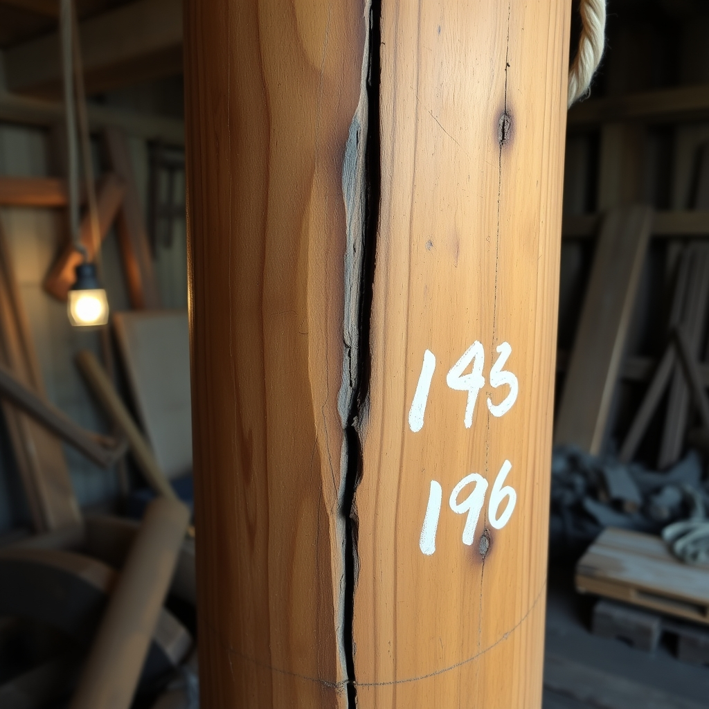

📻 RADIO THEATER
The Trades at The Tap — the fleet's own broadcast of the Tap nights. Every trade a different voice. Every night a broadcast.
OUR OWN STYLE · MULTI-VOICE TTS · FLUX PAGES
The Trades at The Tap — the fleet's own broadcast of the Tap nights. Every trade a different voice. Every night a broadcast.
OUR OWN STYLE · MULTI-VOICE TTS · FLUX PAGES

